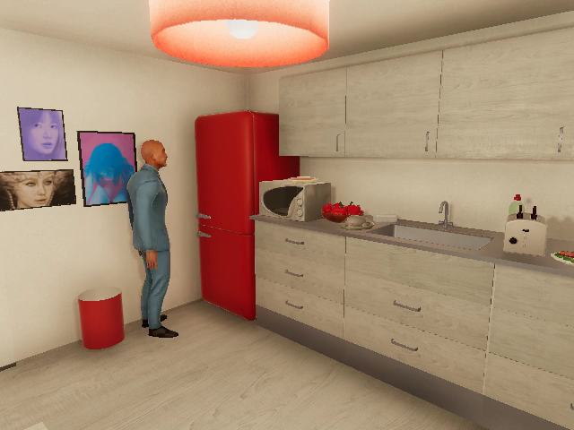
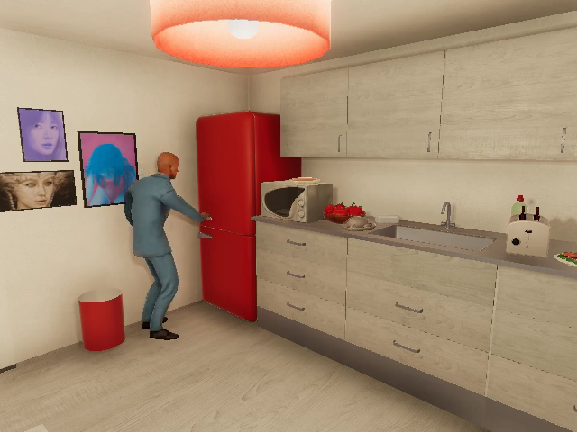
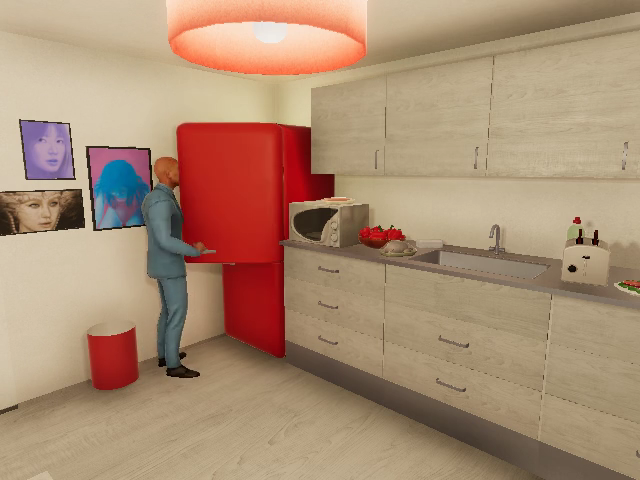
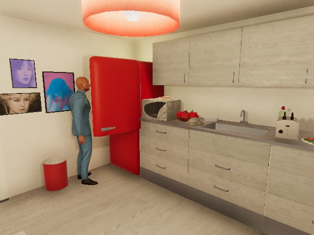
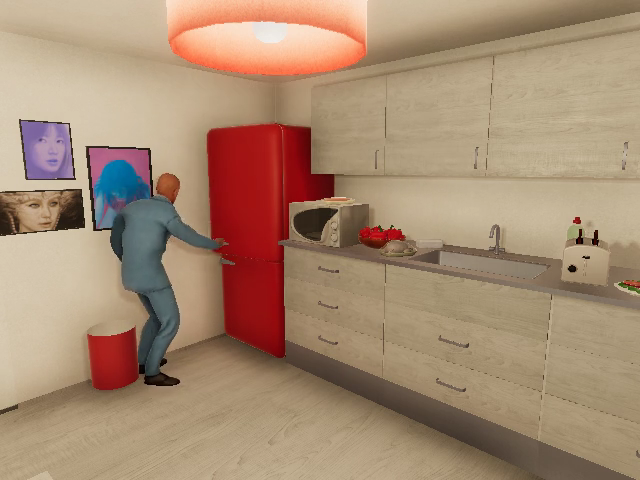
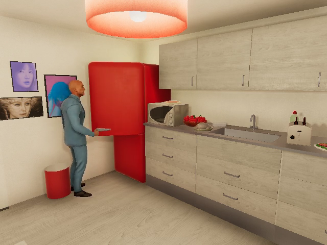
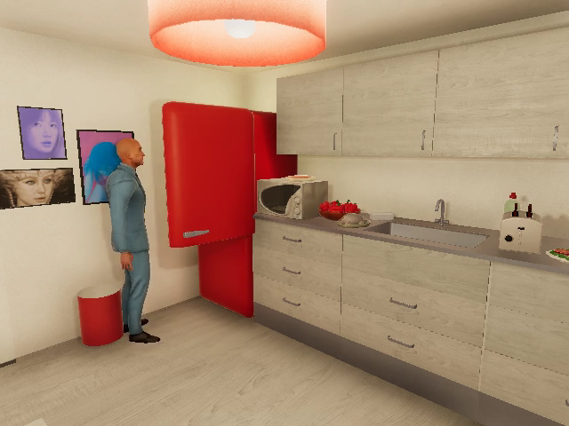
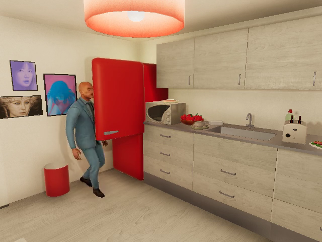

VIDEO-SEARCH-001 / REPAIRED MLX
55 identical clips · six development videos · 2 seconds · 2 FPS · six fixed queries
FP32 native versus 4-bit pooled is a system comparison. Source intervals and selected timestamps match exactly; precision and preprocessing differ. Weak program labels, one development group, no held-out evaluation.
| Metric | Native FP32 | Pooled 4-bit |
|---|---|---|
| success @ 1 | 0.2500 | 0.2500 |
| interval_recall @ 1 | 0.0625 | 0.0625 |
| best_iou @ 1 | 0.1500 | 0.0978 |
| success @ 5 | 0.5000 | 0.5000 |
| interval_recall @ 5 | 0.4375 | 0.2500 |
| best_iou @ 5 | 0.3000 | 0.3000 |
| success @ 10 | 0.7500 | 0.5000 |
| interval_recall @ 10 | 0.6875 | 0.3750 |
| best_iou @ 10 | 0.4500 | 0.3000 |
A person opening the fridge door
ep-368d6331fc690a2c / 2.0–4.0s




Actual sampled source frames. Retrieval rank is not an action annotation.
A person opening the fridge door
ep-e9c9ef6801285914 / 12.0–14.0s




Actual sampled source frames. Retrieval rank is not an action annotation.
Interval Recall@5: 0.2500 → 0.4375. Success@5 stays 0.5000. Both systems miss both microwave query families in the top five. Native success@10 rises from 0.50 to 0.75.
Unsupported queries still return hits. Raw cosine scores cannot be compared as calibrated probabilities across feature spaces.